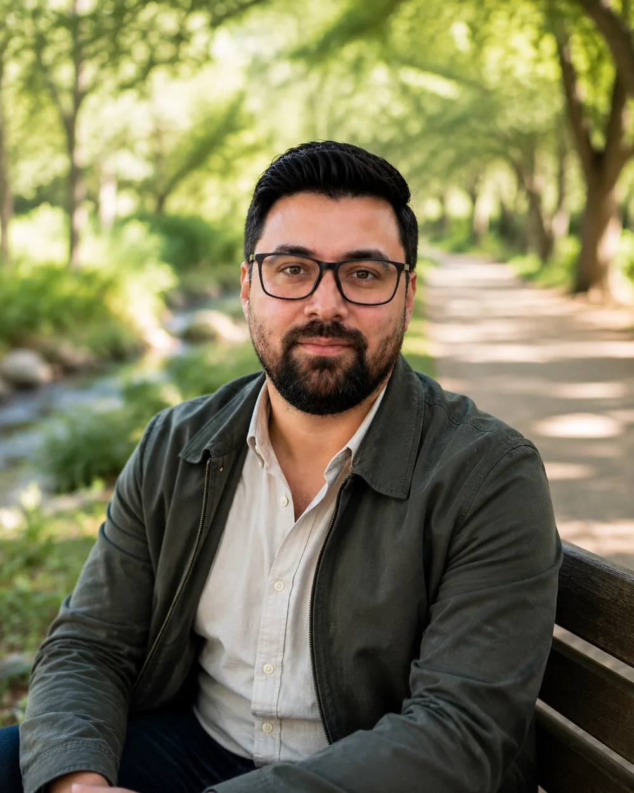

Tu día perdió estructura
Cuesta comenzar actividades, organizar horarios, mantener hábitos o terminar lo que te propones.
Terapia Ocupacional · Salud mental
Acompaño a adolescentes, personas adultas y familias cuando la salud mental comienza a afectar las rutinas, el estudio, el trabajo, los vínculos, el autocuidado o la posibilidad de disfrutar.
¿Te reconoces en algo de esto?
La consulta puede ser útil cuando existe una distancia entre lo que necesitas o deseas hacer y lo que actualmente logras sostener. No necesitas tener un diagnóstico claro ni llegar con todo ordenado.
Cuesta comenzar actividades, organizar horarios, mantener hábitos o terminar lo que te propones.
Hay agotamiento, bloqueo, ausencias, dificultades para concentrarse o temor de retomar.
Actividades, vínculos e intereses que antes eran importantes han perdido espacio.
El autocuidado, las responsabilidades o la toma de decisiones requieren más ayuda que antes.
Después de una descompensación, licencia o interrupción prolongada, volver no ha sido sencillo.
Quieren ayudar, pero no siempre saben cómo acompañar sin presionar ni reemplazar tu autonomía.
¿Por qué Terapia Ocupacional?
La ansiedad, la depresión, el agotamiento u otras dificultades no afectan únicamente el ánimo. También pueden alterar el sueño, el autocuidado, la organización del día, el desempeño académico o laboral, los vínculos y la capacidad de disfrutar.
La Terapia Ocupacional permite comprender esa relación entre la persona, sus actividades significativas y los entornos en los que vive. A partir de esa comprensión, trabajamos sobre cambios concretos y posibles.
No se trata simplemente de “hacer más”. Se trata de recuperar autonomía, continuidad, identidad y participación en una vida que vuelva a sentirse propia.

Trayectoria profesional
Soy Rolf Winser Vargas, Terapeuta Ocupacional. Mi trayectoria se ha desarrollado principalmente en salud mental, acompañando a adolescentes, personas adultas y familias en procesos de diversa complejidad.
Mi experiencia en salud mental comunitaria y en COSAM, el trabajo con equipos interdisciplinarios, la docencia clínica y la formación continua han fortalecido una práctica rigurosa, humana y orientada a generar cambios observables en la vida cotidiana.
Me interesa comprender tanto el problema clínico como sus consecuencias concretas: qué actividades se han interrumpido, qué responsabilidades se han vuelto difíciles, qué apoyos existen y qué necesita recuperar un lugar en la vida de la persona.
Áreas de acompañamiento
Cada proceso es distinto. La evaluación permite definir prioridades, objetivos y una intervención ajustada a tus necesidades reales.
Comprender cómo la situación actual afecta actividades, roles, hábitos, entornos y participación.
Construir estructura, manejo del tiempo, descanso, autocuidado e inicio de actividades.
Planificar una reincorporación gradual, realista y coordinada después de una crisis o interrupción.
Recuperar seguridad para asumir responsabilidades, tomar decisiones y desenvolverse con mayor independencia.
Reconectar con actividades, roles y espacios que aportan sentido, pertenencia y continuidad.
Comprender mejor lo que ocurre y construir apoyos que acompañen sin anular la autonomía.
Cómo trabajo
La intervención no comienza con una receta. Comienza construyendo una comprensión compartida de lo que está ocurriendo.
Conocemos el motivo de consulta y valoramos si la Terapia Ocupacional es pertinente.
Exploramos historia, rutinas, roles, actividades, contextos, obstáculos y recursos.
Definimos prioridades concretas y significativas, sin intentar cambiar todo a la vez.
Aplicamos estrategias, revisamos avances y ajustamos el proceso según lo que ocurre en la vida cotidiana.
Preguntas frecuentes
Atiendo a adolescentes, personas adultas y familias que requieren evaluación o acompañamiento desde Terapia Ocupacional en salud mental.
No necesariamente. Puedes consultar directamente. En el primer contacto valoraremos la pertinencia del enfoque y si conviene coordinar con otros profesionales.
Conoceremos el motivo de consulta, cómo se expresa en la vida cotidiana y qué cambios serían importantes. No necesitas llegar con todo claro.
Ambas modalidades están disponibles. La atención presencial se realiza en el sector de Los Dominicos, Las Condes. La modalidad online se valora según cada caso.
Actualmente atiendo los sábados, principalmente durante la mañana. La disponibilidad se confirma al momento de contactar.
Contacto
Escríbeme para consultar disponibilidad o para aclarar si este acompañamiento puede ser pertinente para ti o para un familiar.